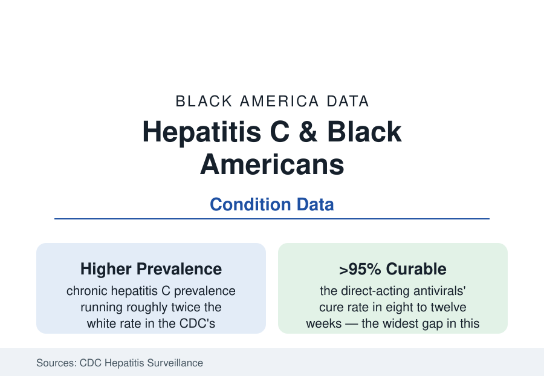

Black Public Health
Hepatitis C in Black Americans: A Curable Disease, Unevenly Cured
Hepatitis C is now curable in eight to twelve weeks of pills — yet Black Americans carry higher infection rates and lower cure rates. The CDC cascade data.

Hepatitis C should be this section's shortest story: a virus identified in 1989, made curable — outright curable, sustained virologic response above ninety-five percent — by the direct-acting antivirals that arrived in 2013, in eight to twelve weeks of once-daily pills. Instead the CDC's surveillance describes the familiar distribution: Black Americans with chronic infection at roughly twice the white prevalence, diagnosed later, treated at lower rates in the early antiviral era, and dying of liver disease the cure prevents. The distance between a >95% cure and its delivery is the article.
Prevalence: The Cohort and the New Wave
The seroprevalence estimates (the NHANES-based and modeled CDC figures) place roughly two and a half million Americans living with chronic hepatitis C, the Black share of infections far above the population share — the burden's shape set by the epidemic's history: the pre-1992 blood supply (the transfusion era before screening — the hemophilia and surgical cohorts), the injection-drug epidemics of the 1970s-90s whose survivors carry the virus silently for decades (the baby-boomer cohort the CDC's birth-cohort screening recommendation of 2012 was built for — Black boomers' prevalence the cohort's highest), and the current era's second wave (the opioid-era infections among younger adults — the incidence data's geography running whiter and more rural in the new cases, the older Black prevalence still dominating the chronic pool). The natural history data explain the stakes' invisibility: two to three decades of silence between infection and symptoms, the fibrosis progressing unmeasured — the first presentation too often the cirrhosis, the variceal bleed, or the hepatocellular carcinoma of the cancer file (Black patients' liver-cancer rates carrying the viral hepatitis signature beside the metabolic one). The cofactors in the progression data — alcohol's acceleration in the substance file, the HIV co-infection tier (the co-infected patients' faster fibrosis in the cohort studies), the diabetes interaction — map the virus's Black burden as a web, not a line.
The Cascade: Tested, Linked, Treated, Cured
The care cascade is where the file's data live: testing (the universal adult screening recommendation of 2020 replacing the cohort rule — the testing rates in the safety-net and primary-care data climbing but the diagnosed fraction of the infected still estimated well under complete, the emergency-department opt-out screening programs finding the undiagnosed at the rates their published yields document); linkage (the positive antibody test's long leak to the confirmatory RNA and the liver staging — the cascade studies' attrition at every joint, steepest where the ordering clinician and the treating specialist are different systems); treatment (the early-DAA era's scandal in the claims data: the Medicaid fibrosis-stage restrictions and sobriety rules — the payers rationing the cure by how sick the patient already was — falling state by state under litigation and advocacy across the late 2010s, their residue measurable in the treatment-rate gaps of the transition years; the VA standing as the cascade's control group — its systematic screen-and-treat program curing its enrolled veterans, Black veterans included, at rates the civilian data have not matched, the equal-system lesson in hepatology's own numbers); and cure confirmation, the cascade's last leak. The treatment-era outcome data give the disparity its modern shape: where treated, Black patients cure at the same >95% in the trial and VA data — the drug does not discriminate; the funnel does.
Elimination: The Plan and the Arithmetic
The national elimination framework (the White House and National Academies' proposals of the recent years — the subscription-model purchasing for Medicaid populations piloted in Louisiana and Washington, the point-of-care RNA tests moving through approval, the harm-reduction infrastructure of the substance file as the prevention arm) prices the goal: the modeling studies' finding that treatment at scale is cost-saving within years (the cure averting the transplant and cancer ledgers), against the appropriations' actual size — the elimination budget requests running at fractions of the modeled need in the congressional record. The correctional-system health and Medicaid-churn chapters of the file (the treated-too-late and the interrupted-course cases in the outcomes data) mark the cascade's hardest joints. The endpoint's data already exist in miniature: the VA's cured cohort, the subscription states' treatment curves — the elimination question in this file is never whether the tool works. It is whether the delivery system built for the rest of this section can be made, for one curable virus, to finish a job.
Reading the Hepatitis Data
Twice the prevalence, the same ninety-five percent cure, and a cascade leaking at every joint the section has already mapped: hepatitis C is the atlas's controlled experiment in what disparity is made of when the medicine is perfect. It is not made of the drug. It is made of everything between the virus and the pharmacy — and every joint of that distance has a name, a dataset, and a fix already demonstrated somewhere in the same file.
More in Black Public Health
Hypertension Among Black Adults: Prevalence, Control, and Consequences
About 55 percent of Black adults have hypertension — the highest rate of any U.S. group. Prevalence, onset, control, and the stroke, heart, and kidney consequences in the data.
Diabetes Among Black Adults: Prevalence and Complications
Nearly one in five Black adults has diabetes, diagnosed or undiagnosed — and its complications fall with particular weight. The CDC data on prevalence, control, and outcomes.
Black Life Expectancy: The Gap at Birth and Its Causes
Black life expectancy at birth is about 73 years, roughly five years below the national figure — the summary measure of every health gap in this section. The CDC data.
Source: Centers for Disease Control and Prevention viral hepatitis surveillance; U.S. Department of Veterans Affairs hepatitis program data; AASLD/IDSA treatment guidance; National Academies hepatitis elimination reports.